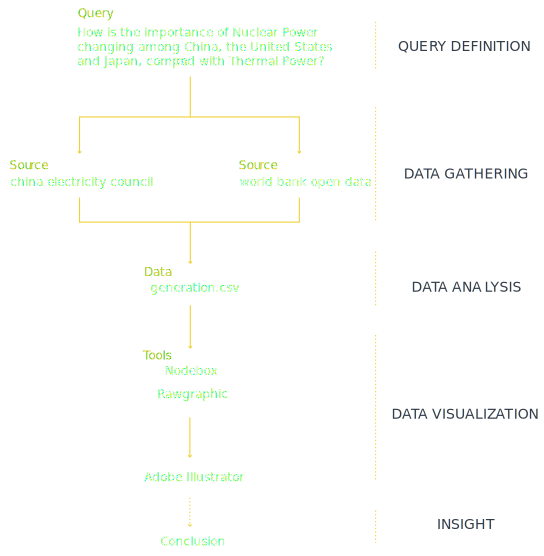

Description
为探究火电和核电在中美日三个国家发电结构中重要性的变迁，我选择了2009年之后的十年时间作为研究对象，包括日本历经福岛核电站泄漏事故的2011年。我主要从中国电力联合会、世界银行开放数据，以及各个国家的官方数据库中收集数据。
在能源类别方面，不同的国家有着不同的划分标准，为此，我首先提取了火电和核电的发电量数据，通过“百分比堆叠柱状图(slacked bar chart)”和“折线图(line graphy)”表示二者重要程度的变迁。随后，为综合不同的分类标准以及更加直观的对比量的关系，我针对每一年的数据进行了“矩形树状图(tree map)”的可视化分析。
Protocol

conclusion
从图中您可以看出，中国的核电比重一直在持续稳定的增长，但仍然与火电有着相当大的差距，相反，美国的核电比重几乎不发生变化，但火电比重持续下降，二者之间的差距越来越小。日本的核电比重自2011年之后持续下降，火电比重却在三个国家中唯一呈上升趋势，其原因是，在2011年发生福岛核电站泄漏事件以后，日本政府陆续关闭了50座核反应堆，并计划于2040年前淘汰所有核电站。由此看来，核电在中美的发电结构占有越来越重要的地位，但其安全性问题ff不容乐观。